2026-09-18 · 狼人杀法官端 / 榴莲公共桌面 / 朝外展示端 · 真实 Chromium 151.0.7922.34
moderator.html按生产代码 packages/client/src/game/werewolf/moderator/ 的真实结构实现：真实法官端是单屏全知控制台，不是"夜晚→白天→投票"的流程机。因此本页只做三件事，没有臆造夜晚行动或投票操作：
身份分配与玩家端一致：4 狼（01/04/07/10）、4 神（03 预言家 / 05 女巫 / 08 守卫 / 11 猎人）、4 民（02/06/09/12），03 与 09 已出局 → 存活 10，与玩家端「10 / 12 存活」吻合。
durian-table.html对应生产侧的房间共用大屏（spectator / table 视角）。只承载 DurianPublicView 的公开字段：全桌累计需求、已出牌列（含生效半边）、玩家罚分与淘汰、牌堆剩余、当前轮到谁与上一手、轮次。
明确不上屏：任何人的 foreheadCards（头顶牌）与 drawnCard（当前摸到的牌）。这两项在生产里由 buildDurianSpectatorView 强制隔离；本页除文案约束外，还由断言检查"内容区不含私密字段文案"且"不渲染任何手牌类节点"。
数据与玩家端示例局一致：累计需求 榴莲 5 / 草莓 3 / 香蕉 2 / 葡萄 2 / 苹果 3，已出牌列 6 张，牌堆剩余 15，当前轮到 03 号，轮次 02 / 07。
display.html —— 需要你确认的一处假设"朝外展示端"在整个仓库里没有任何既有定义（只有 HANDOFF / NEXT-AGENT-PROMPT / index.html 三处"待做"提及，生产代码中也没有对应物）。
本轮按"面向围观者 / 路人的对外展示牌"实现：大字号展示在玩什么、进行到哪一步、怎么加入，附房间号与二维码占位，并明确声明"不出现任何身份、手牌或投票细节"。内置三种示例状态（狼人杀进行中 / 等待开局 / 榴莲进行中）便于比较。
如果你的本意是别的（例如房间门口的引导海报、或第二块围观大屏），告诉我语义即可，改动量很小。
| 视口 | 页面 | 检查结果 | 滚动容器 |
|---|---|---|---|
| 360x640 | 狼人杀法官端 | 横向溢出 0出界 0裁字 0触控达标无报错 | div#mod-seat-grid.mod-seat-grid |
| 360x640 | 榴莲公共桌面 | 横向溢出 0出界 0裁字 0触控达标无报错 | div#dt-placements.dt-placement-list、div#dt-players.dt-player-list |
| 360x640 | 朝外展示端 | 横向溢出 0出界 0裁字 0触控达标无报错 | 无（整页一屏） |
| 390x844 | 狼人杀法官端 | 横向溢出 0出界 0裁字 0触控达标无报错 | div#mod-seat-grid.mod-seat-grid |
| 390x844 | 榴莲公共桌面 | 横向溢出 0出界 0裁字 0触控达标无报错 | div#dt-placements.dt-placement-list、div#dt-players.dt-player-list |
| 390x844 | 朝外展示端 | 横向溢出 0出界 0裁字 0触控达标无报错 | 无（整页一屏） |
| 844x390 | 狼人杀法官端 | 横向溢出 0出界 0裁字 0触控达标无报错 | div#mod-seat-grid.mod-seat-grid |
| 844x390 | 榴莲公共桌面 | 横向溢出 0出界 0裁字 0触控达标无报错 | div#dt-placements.dt-placement-list、div#dt-players.dt-player-list |
| 844x390 | 朝外展示端 | 横向溢出 0出界 0裁字 0触控达标无报错 | 无（整页一屏） |
| 1280x800 | 狼人杀法官端 | 横向溢出 0出界 0裁字 0触控达标无报错 | 无（整页一屏） |
| 1280x800 | 榴莲公共桌面 | 横向溢出 0出界 0裁字 0触控达标无报错 | 无（整页一屏） |
| 1280x800 | 朝外展示端 | 横向溢出 0出界 0裁字 0触控达标无报错 | 无（整页一屏） |
| 结果 | 断言 | 细节 |
|---|---|---|
| 通过 | 法官端 · 初始 12 席位 | — |
| 通过 | 法官端 · 初始存活 10（3、9 已出局） | {"alive":"10"} |
| 通过 | 法官端 · 席位显示真实身份 | — |
| 通过 | 法官端 · 标记出局弹出二次确认 | — |
| 通过 | 法官端 · 确认弹窗打开时焦点在弹层内 | — |
| 通过 | 法官端 · 取消后状态不变 | — |
| 通过 | 法官端 · 确认后 05 号出局 | — |
| 通过 | 法官端 · 存活数降为 9 | {"alive":"9"} |
| 通过 | 法官端 · 撤销出局恢复存活 10 | — |
| 通过 | 法官端 · 结束对局弹出二次确认 | — |
| 通过 | 法官端 · 亮牌后出现已结束横幅 | — |
| 通过 | 法官端 · 亮牌后按钮禁用 | — |
| 通过 | 法官端 · Tab 焦点不跑出弹层 | {"trail":["button#mod-rules-close","button#mod-rules-close","button#mod-rules-close","button#mod-rules-close","button#mod-rules-close"," |
| 通过 | 法官端 · 关闭后焦点回到触发按钮 | — |
| 通过 | 公共桌面 · 累计需求 5 项 | [{"name":"榴莲","n":"5"},{"name":"草莓","n":"3"},{"name":"香蕉","n":"2"},{"name&q |
| 通过 | 公共桌面 · 累计需求数值与玩家端一致（榴莲5/草莓3/香蕉2/葡萄2/苹果3） | [{"name":"榴莲","n":"5"},{"name":"草莓","n":"3"},{"name":"香蕉","n":"2"},{"name&q |
| 通过 | 公共桌面 · 已出牌列 6 张 | {"placements":6} |
| 通过 | 公共桌面 · 玩家 7 位 | — |
| 通过 | 公共桌面 · 牌堆剩余 15 | {"deck":"15"} |
| 通过 | 公共桌面 · 显示当前轮到 03 号 | {"turn":"现在轮到 03 号 · 你的小果摊"} |
| 通过 | 公共桌面 · 轮次 02 | — |
| 通过 | 公共桌面 · 内容区不含私密字段文案 | {"leaks":[]} |
| 通过 | 公共桌面 · 不渲染任何手牌类节点（头顶牌/摸到的牌/本人牌） | {"hasCardLikeNodes":0} |
| 通过 | 展示端 · 默认显示狼人杀进行中 | {"title":"狼人杀","status":"正在进行","facts":3,"room":"8241"} |
| 通过 | 展示端 · 展示 3 项桌况概览 | {"title":"狼人杀","status":"正在进行","facts":3,"room":"8241"} |
| 通过 | 展示端 · 可切到等待开局 | {"title":"准备开始","status":"等待开局","facts":3,"room":"8241"} |
| 通过 | 展示端 · 可切到榴莲进行中 | {"title":"榴莲","status":"正在进行","facts":3,"room":"8241"} |
控制台错误 / 页面异常：三页均为 0
现象：首次复核时 main.d-game 需要整页滚动，360×640 下溢出 760px、844×390 下溢出 236px。
根因：.dt-page 只有 flex:1 没有高度约束，子元素可无限撑高，flex:1;min-height:0 的牌列与玩家列表因此从未真正约束住。
修复：durian-table.css 增加 .dt-game{overflow:hidden} 与 .dt-page{height:100%;min-height:0}，并给 .dt-demand 设 flex-shrink:0。
复验：四个视口整页溢出均为 0，仅牌列与罚分列表内部滚动。
修复：display.css 的 max-width:480px 断点把桌况概览改为 3 列一行（省下整行高度），并压缩字号与间距、把长免责声明让位给核心信息。
复验：360×640 整页溢出 0，四个视口均无溢出。
现象：法官端在 360×640 与 390×844 下，工具条"← 玩家端"链接实测宽 43px、高 44px。
修复：三页的工具条链接统一补 min-width:44px 与水平内边距。
复验：三页四视口的小触控目标数均为 0。
首轮"公共桌面不泄露隐藏信息"的断言报出 头顶 / 摸到 两个命中词，复查发现命中的是页脚的安全声明本身（"任何人的头顶牌与当前摸到的牌都不会出现在这块屏幕上"）。已把扫描范围限定为内容区（排除页脚声明），并追加一条结构性断言：内容区不得渲染任何手牌类节点（.d-mini-card / .d-drawn-card / .d-half 等），避免只靠文案判断。
WerewolfModeratorStatistics、suggestedOutcome 等生产契约的对接。buildDurianSpectatorView。packages/client/** 一行未动，未做协议、构建与业务联调。# 1) 在 D:\项目 启动仅回环的静态服务 node scripts/serve-art-preview.mjs # 127.0.0.1:4173 # 2) 语法校验 node --check docs/ui-preview/werewolf-durian/moderator.js node --check docs/ui-preview/werewolf-durian/durian-table.js node --check docs/ui-preview/werewolf-durian/display.js # 3) 第二批四视口 + 流程复核 B3_BASE=http://127.0.0.1:4173 B3_ROOT=. node docs/ui-preview/werewolf-durian/verify/b2-verify.mjs
原始数据：verify/b2-results.json（本报告所有表格均由它生成）。
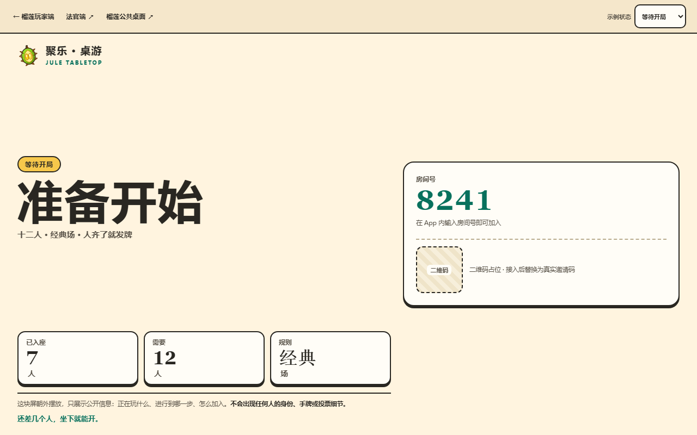
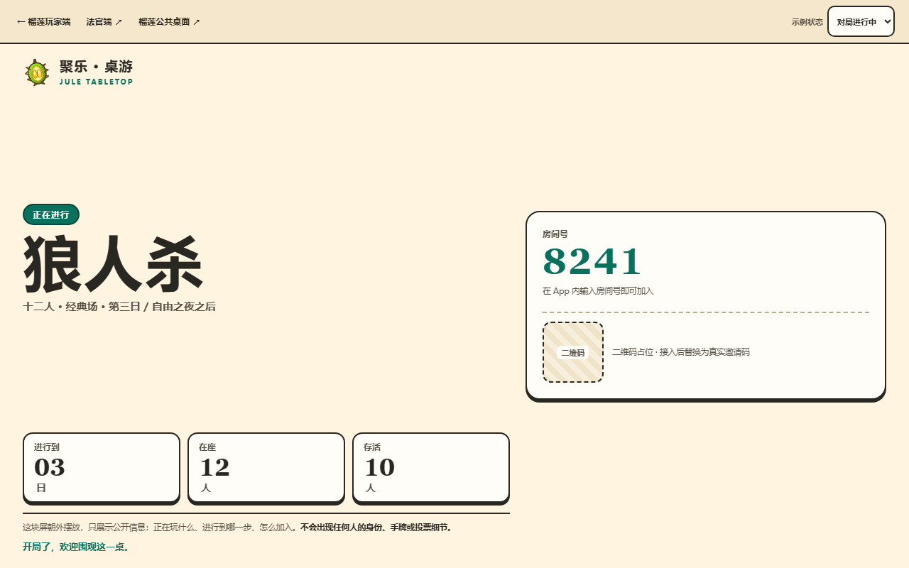
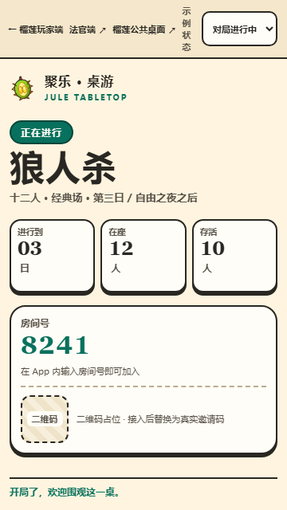
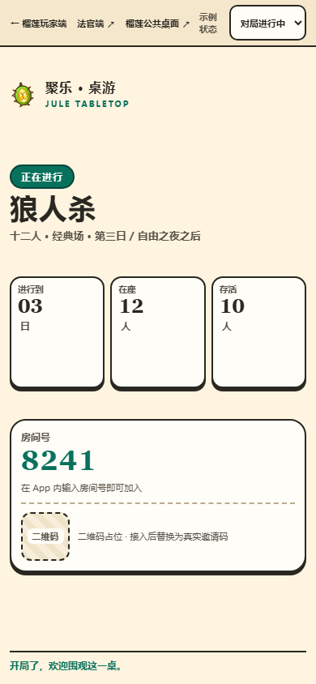
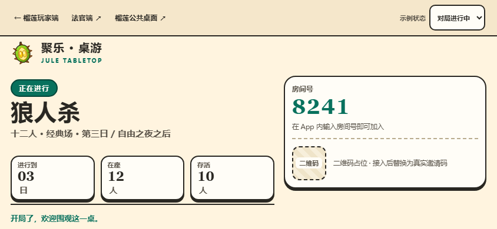
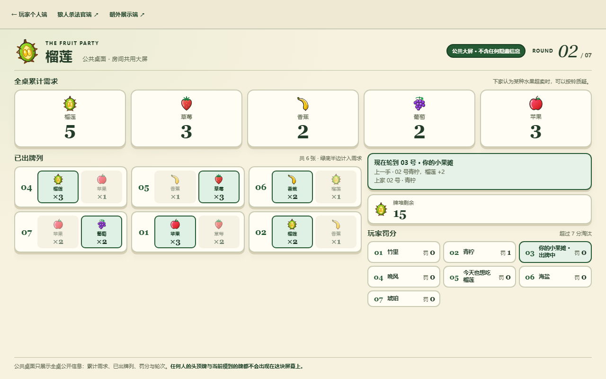
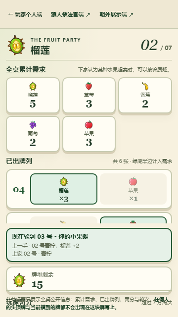
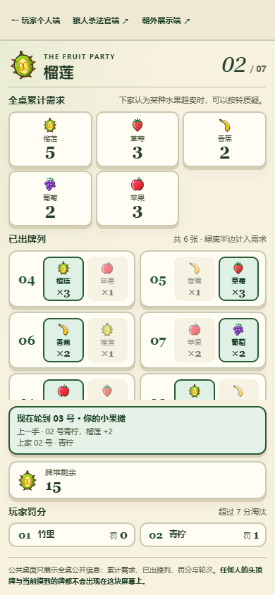
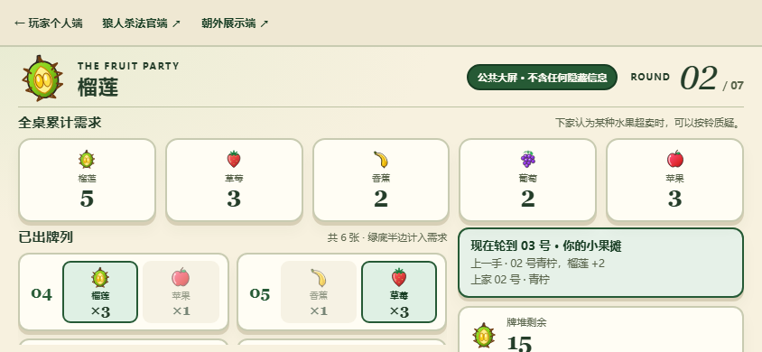
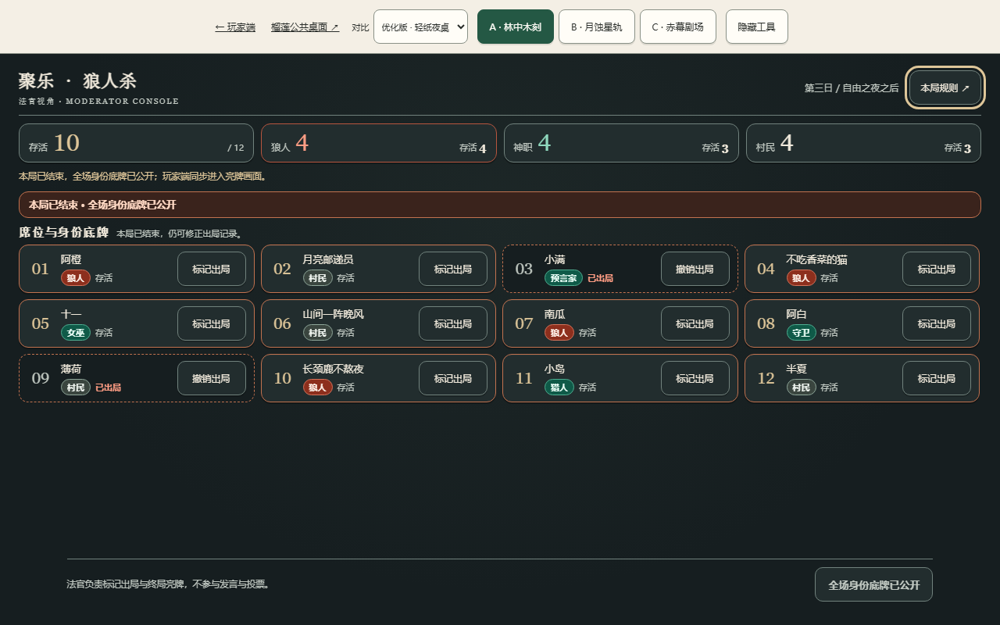
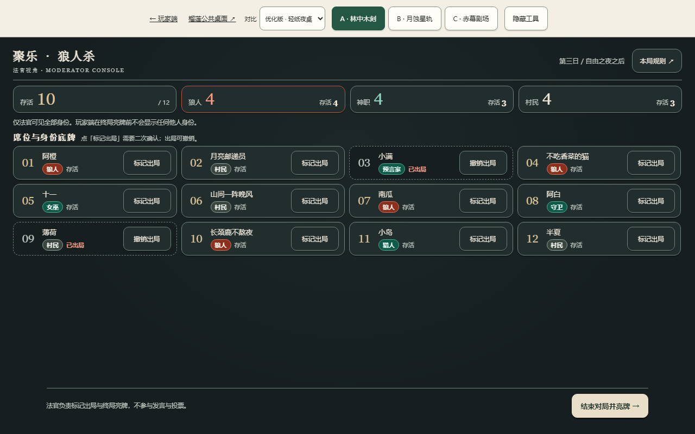
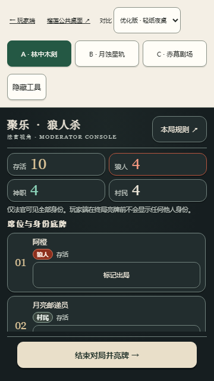
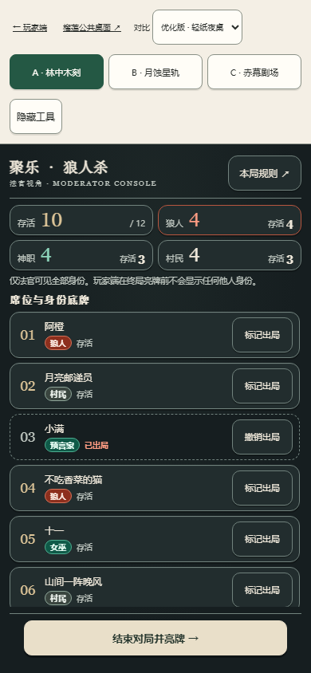
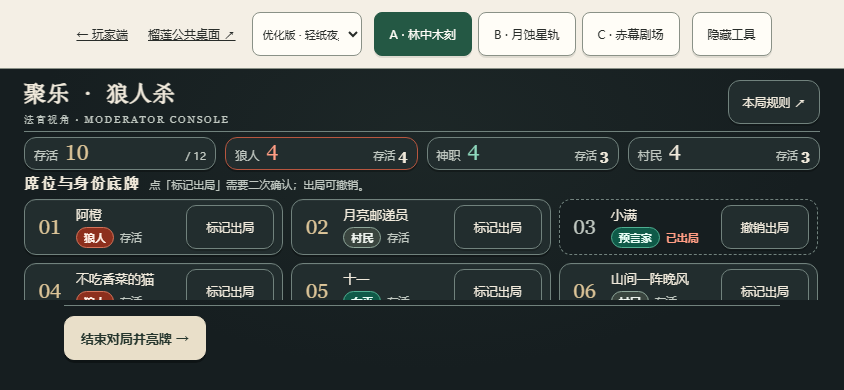
报告生成于 2026-09-18T10:24:47.881Z · 数据来源：b2-results.json（真实浏览器运行直接产出）